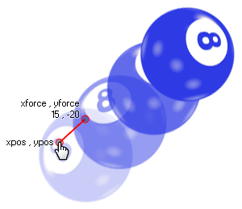

physics_apply_impulse
This function applies an impulse to a position in the room with a strength defined by a vector.
Syntax :
physics_apply_impulse(xpos, ypos, ximpulse, yimpulse)
| Argument | Description |
|---|---|
| xpos | The x coordinate in the room where the impulse will be applied |
| ypos | The y coordinate in the room where the impulse will be applied |
| ximpulse | the x component of the impulse vector |
| yimpulse | the y component of the impulse vector |
Returns : N/A
Description
Not only can you apply force and gravity to an object with the physics in GameMaker:Studio but you can also apply an impulse. This is slightly different to a force in that when it is applied it will
immediately affect the speed, and, potentially the torque (or "spin") of the object, particularly if the point chosen to apply the impulse is not aligned with the center of mass (note : the center of
mass is not necessarily the same as the origin!). Here is an illustration:

As you can see, the player has clicked on the ball and this has given it an impulse to move to the upper right, spinning as it goes. The exact impulse is defined by the vector we get from the components
ximpulse/yimpulse in relation to the xpos/ypos coordinates - which simply means that the impulse is calculated as the distance from xpos/ypos to ximpulse/yimpulse in Newtons, and the direction is the angle
that we get from xpos/ypos to ximpulse/yimpulse.
NOTE : The physics world uses metres for all its calculations, and the ratio of pixels per metre is defined in the room editor or using
physics_world_create.
Example :
if mouse_check_button_pressed(mb_left)
{
with (place_meeting(mouse_x, mouse_y, all))
{
physics_apply_impulse(mouse_x, mouse_y, -10 + irandom(20), -10 + irandom(20));
}
}
The code above will apply an impulse with a random vector to an instance that is at the mouse position when the left button is pressed.